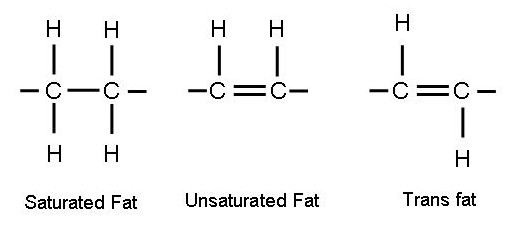

Yes! Assuming no underlying medical problems, a person's weight is dependent on 2 variables: Energy In and Energy Out.
This is the energy that a person takes into their body. A person gets energy by eating anything with "calories": food and beverages - excluding water. Water has no calories.
This is energy that a person's body uses in order to function. A person uses his or her body's stored energy in two main ways:
To lose weight you must simply take in less calories and use more calories. In other words: eat less, play more.
To gain weight, you must take in more calories and use less calories. In other words: eat more play less.
To maintain your current weight, you must take in the same number of calories that you use. In other words: eat the same amount you play.
To keep things simple, fat is simply a way for your body to store excess energy in the form of "fat molecules." Yes, there are different subtypes of fats - brown fat and white fat - that serves different functions. But, we won't get that complicated.
This is a complicated question that has many little components, but we'll simplify to its most basic idea.
In short, muscle is more dense than fat. One pound (or kg) of muscle takes up less volume than one pound (or kg) of fat. So, a person who weighs 100lbs with a low fat content, but a high muscle content will look thinner than a person who weighs 100lbs with a higher fat content, but a lower muscle content. Athletes try to build muscle mass and reduce their fat mass.
Exercise allows athletes to build muscle mass. Muscles use more of your body's energy than fat does (ie. increased "Energy Out"). By exercising, these athletes are using the energy that they eat to build muscle (and to heal after each round of exercise). If these athletes reduced their dietary intake (reduced Energy In), but continued their exercise (increased Energy Out), they would lose weight (Energy In < Energy Out). In fact, their bodies would break down their own muscle to use as energy. This is counterproductive. So, these athletes consume more food (increased Energy In) and exercise at the same time. This, forces the body to build muscle before it builds fat. However, if there is a surplus of food intake (excess Energy In beyond what the body needs to build muscle), they would gain fat. But athletes gain weight by predominantly building muscle mass.
In terms of weight gain and weight loss - No, it does not matter. But, in terms of maintaining overall health - YES, it matters a lot.
A good general rule is: Anything that is close to a farm is good anything that is away from the farm is bad. To be clear, I don't mean away/close to farms in terms of proximity, but in terms of processing.
Close to farms = raw fruits, raw vegetables, whole grains, foods without added sugars, etc.
Away from farms = processed foods, refined foods, foods with added sugars, soda's, deep fried foods, things you buy in packages, candy, etc.
Try to strive for a well-balanced meal, make sure your meals generally consist of all food groups. Many guidelines and resources exist on the internet to help you create a well-balanced meal.
Here is one from the United States Department of Agriculture: MyPlatePlan
Here is one from the European Union (you may need to scroll down): Food Based Dietary Guidlines
Strive for oils with the highest amount of polyunsaturated and unsaturated fats and the lowest amounts of saturated fats. Avoid eating things with trans fats. Trans fats are fats which have hydrogens diagonally across a double bond. They have been shown to increase risk of heart disease, stroke, and diabetes. Here is a good resource on understanding trans fats: American Heart Association

A good general trend is: The more liquid the oil the higher the unsaturated fat content; the more solid the oil the higher the saturated fat content.
Try to minimize your intake of added sugars. To find out if your food has added sugars check the nutrition label. Sugars have many different names.
Some names end in the suffix "-ose" like sucrose, glucose, fructose, dextrose, maltose etc.
Other names include: "high fructose corn syrup," "cane sugar," "agave nectar," "dextrin," "raw sugar," "syrup," "honey," "fruit juice concentrates," "corn sweetner," "molasses," "barley malt," "brown sugar," "cane sugar," "rice syrup," "syrup," etc.
For more information try these links: UCSF Sugar Science and AHA Added Suagar
Yes! For Vegans and Vegetarians, to maximize your protein intake eat a wide variety of legumes and nuts. It is also important to find ways to get Vitamin B12 into your body (since B12 is mostly found in animal products). If you drink milk/yogurt - that should give you B12. Otherwise, try to find foods fortified with Vitamin B12.
Multivitamins are also available - but be aware that multivitamins are NOT regulated by the FDA in the US. Do a bit of digging and find a source you trust.
The best way to know this is by counting calories - look up different foods you eat on Google, check the nutrition lables, try MyFitnessPal for an estimate of how much calories are in the food you are eating.
This is a hard question to answer. First, everybody's basic metabolic rate is different. Second, as we grow older our basic metoblic rate grows slower (ie. reduced Energy Out).
The easy way: Track your weight over a period of weeks. If your weight is increasing, your Energy In > Energy Out. If your weight is decreasing, your Energy In < Energy out. If your weight is not changing, your Energy In = Energy out.
The hard way: There are equations that help calculate your basic metabolic rate: Click here. Calculating your calories lost via exercise can be done with smart watches, by using your exercise equipment's calorie tracker, or by calculating average energy utilization based on distance run.
Consult your doctor! There are many medical conditions, some quite serious, that can lead to unexpected weight loss or weight gain regardless of your conscious Energy In and Energy out.
Consult your doctor before attempting any weight gain or weight loss routines. This post does not constitute medical advice nor does it prescribe any therapy or treatment.